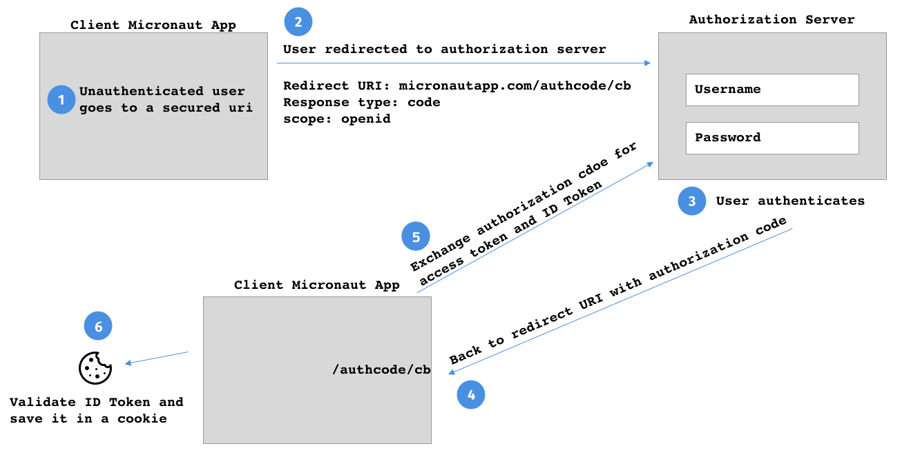

compile 'io.micronaut.configuration:micronaut-oauth2'Table of Contents
Micronaut Oauth2
Integration between Micronaut, Oauth2 and OpenID Connect
Version: 1.0.0.BUILD-SNAPSHOT
1 Introduction
This project eases Oauth 2.0 integration with Micronaut.
<dependency>
<groupId>io.micronaut.configuration</groupId>
<artifactId>micronaut-oauth2</artifactId>
</dependency>2 Open ID Connect
OpenID Connect 1.0 is a simple identity layer on top of the OAuth 2.0 protocol. It allows Clients to verify the identity of the End-User based on the authentication performed by an Authorization Server, as well as to obtain basic profile information about the End-User in an interoperable and REST-like manner.
If you are new to OpenID Connect, watch Oauth 2.0 and OpenID Connect.
3 Client ID & Client Secret
Micronaut integration with authentication & authorization platforms such as Okta, Auth0, AWS Cognito, Keycloack, etc.
Once you create an application client with a provider you will get a Client ID and Secret.

The previous image shows how to get an client id and client secret with AWS Cognito. Please, note you can obtain similar credentials with other providers.
Once, you get the client_id and client_secret
src/main/resources/application.yml
micronaut:
security:
oauth2:
client-secret: '${OAUTH_CLIENT_SECRET}'
client-id: '${OAUTH_CLIENT_ID}'Create two environment variables OAUTH_CLIENT_SECRET, OAUTH_CLIENT_ID with the credentials you obtained from the provider.
4 Service Discovery
The easiest way to integrate a micronaut application with an Open ID Connect server is to use the `.well-know/openid-configuration endpoint, an endpoint which applications use to retrieve the configuration information for the OIDC server.
The endpoint returns a spec-defiend set of fields. Micronaut uses the configuration returned to configure itself.
Please, chek with your provider to locate the location of teh well-know configuration endpoint. Next, we show examples for common providers:
4.1 Service Discovery OKTA
src/main/resources/application.yml
micronaut:
security:
oauth2:
client-secret: '${OAUTH_CLIENT_SECRET}'
client-id: '${OAUTH_CLIENT_ID}'
openid-configuration: '${OKTA_DOMAIN}/oauth2/${OKTA_AUTHSERVERID}/.well-known/openid-configuration'You will need to setup the OKTA_DOMAIN and OKTA_AUTHSERVERID environment variables.
Those may be something like:
export OKTA_DOMAIN=https://dev-XXXXX.oktapreview.com
export OKTA_AUTHSERVERID=default4.2 Service Discovery AWS Cognito
To configure the well-know configuration endpoint with AWS Cognito you can setup:
src/main/resources/application.yml
micronaut:
security:
oauth2:
client-secret: '${OAUTH_CLIENT_SECRET}'
client-id: '${OAUTH_CLIENT_ID}'
openid-configuration: 'https://cognito-idp.${AWS_REGION}.amazonaws.com/${COGNITO_POOL_ID}/.well-known/openid-configuration'Please, note you will need to define environment varaibles for AWS_REGION and COGNITO_POOL_ID.
4.3 Service Discovery Auth0
src/main/resources/application.yml
micronaut:
security:
oauth2:
client-secret: '${OAUTH_CLIENT_SECRET}'
client-id: '${OAUTH_CLIENT_ID}'
openid-configuration: '${AUTH0_DOMAINNAME}/.well-known/openid-configuration'You will need to define the environment variable AUTH0_DOMAINNAME.
You can obtain the auth0 domain from the application dashboard:

4.4 Service Discovery Keycloack
src/main/resources/application.yml
micronaut:
security:
oauth2:
client-secret: '${OAUTH_CLIENT_SECRET}'
client-id: '${OAUTH_CLIENT_ID}'
openid-configuration: '${KEYCLOACK_DOMAIN}/auth/realms/${KEYCLOAK_REALM}/.well-known/openid-configuration'You will need to define the environment variable KEYCLOACK_DOMAIN and KEYCLOAK_REALM for example:
export KEYCLOACK_DOMAIN=http://localhost:8080
export KEYCLOAK_REALM=master5 Flows
5.1 OpenID Connect Authorization code Flow
The following configuration illustrates a possible set up to use authorization code flow with Micronaut and a third-party OpenID Configuration authorization server.
src/main/resources/application.yml
micronaut:
security:
enabled: true (1)
oauth2:
client-secret: '${OAUTH_CLIENT_SECRET}' (2)
client-id: '${OAUTH_CLIENT_ID}' (3)
openid-configuration: '${OKTA_DOMAIN}/oauth2/${OKTA_AUTHSERVERID}/.well-known/ openid-configuration' (4)
token:
jwt:
enabled: true (5)
cookie:
enabled: true (6)| 1 | Enable security |
| 2 | Client Secret. Your authorization server provider provides this value. |
| 3 | Client ID. Your authorization server provider provides this value. |
| 4 | well-know openid-configuration endpoint url. Allows micronaut to discover the configuration of the Open ID Configuration server. |
| 5 | Often, ID Token will be respond as JWT tokens. You will need to enable Micronaut’s JWT support to validate it. |
| 6 | Once, validated you may want to save the JWT IDToken in a cookie. To read in subsequent requests, enable Cookie Token Reader. |

5.1.1 ID Token Validator
Assuming the ID Token is a JWT token, the DefaultIdTokenAccessTokenResponseValidator validates the JWT Claims against every bean of type GenericJwtClaimsValidator and IdTokenClaimsValidator.
Some GenericJwtClaimsValidator are already registered:
Some IdTokenClaimsValidator are already registered: and:
Please, validate your IDToken as described in the ID Token Validation section.
Remember to enable JWT support micronaut.security.token.jwt.enabled=true.
5.2 Logout
A logout process may look like the one displayed in the next image:

You will need to enable the Logout Controller and accept GET requests.
src/main/resources/application.yml
micronaut:
security:
...
..
.
endpoints:
logout:
enabled: true (1)
get-allowed: true (2)| 1 | Enable Logout Controller. |
| 2 | Accept HTTP GET requests to the logout controller endpoint. |
5.2.1 Logout URL
If you are using Server side view rendering support in Micronaut, the EndsessionViewModelProcessor injects into the model the logout url of the authorization server correctly configured.
| Property | Type | Description |
|---|---|---|
|
boolean |
Sets whether the {@link EndsessionViewModelProcessor} is enabled. Default value ({@value #DEFAULT_ENABLED}). |
|
java.lang.String |
Model key name. Default value ({@value #DEFAULT_ENDSESSIONURLKEY}). |
Next code snippets shows a Velocity view which contains a link to logout.
<!DOCTYPE html>
<html>
<head>
<title>Logout/title>
</head>
<body>
<a href="${endsessionurl}">Logout</a>
</body>
</html>5.3 Password Grant Type
The Password grant is one of the simplest OAuth grants and involves only one step: the application presents a traditional username and password login form to collect the user’s credentials and makes a POST request to the server to exchange the password for an access token
For example, the next image illustrates a Basic auth authentication which does a remote grant type pasword authentication:

You can enable an implementation of Authentication Provider to authenticate using Grant type password.
micronaut:
security:
oauth2:
client-secret: '${OAUTH_CLIENT_SECRET}'
client-id: '${OAUTH_CLIENT_ID}'
grant-type-password:
enabled: true| Property | Type | Description |
|---|---|---|
|
boolean |
Sets whether the {@link GrantTypePasswordRequestProvider} is enabled. Default value ({@value #DEFAULT_ENABLED}). |
|
The Content-Type used to communicate with the token endpoint. |
|
|
java.util.List |
OAuth 2.0 scopes. |